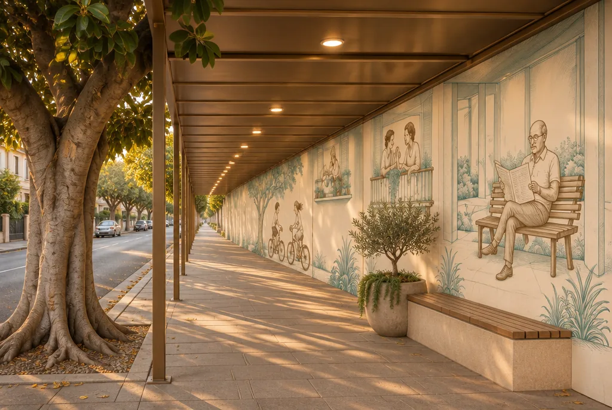
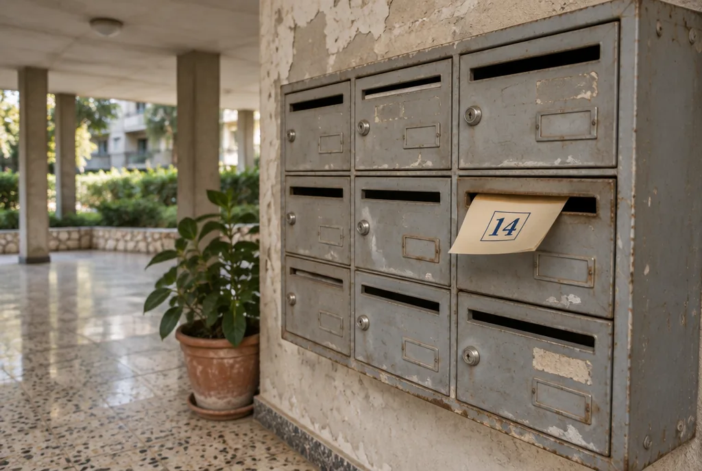

לפני שמישהו גר בבניין, הוא גר ברחוב שלוש שנים. את התקופה הזאת השכנים זוכרים, ואותה העירייה שומעת.

60 מטר של גדר, תערוכת רחוב. הציורים הם הדיירים של הבניין, והמעבר מקורה ומואר לכל אורכו. אפשר לשבת בו.
שילוט לתקופת הבנייה
14RUE° 14
מעבר הולכי רגל ←
מקורה ומואר לכל אורך הגדר. גם עגלות, גם כיסאות גלגלים.
14RUE° 14
שעות עבודה
ראשון עד חמישי, 07:00–17:00. שישי ושבת: שקט.
14RUE° 14
סליחה על הרעש.
אנחנו בונים בית ל-42 משפחות. 12 מהן גרו כאן.

14עדכון לשכנים · נובמבר 2027
מה עשינו החודש
יצקנו את תקרת קומה 5. הבניין עבר את גובה הבניינים השכנים.
מה ירעיש בחודש הבא
עבודות מנוף בבקרים, 08:00–12:00, בין 3 ל-14 בדצמבר. החניה מול מספר 16 תיסגר ביומיים האלה בלבד.
מי עונה לכם
מלווה השכנים, בטלפון ובוואטסאפ. עונים באותו יום.
בתיבת הדואר של כל בניין ברחוב, בראשון לכל חודש.
רחוב אחד, שפה אחת
בהתחדשות עירונית רחוב אחד יכול לקבל שלושה יזמים, שלוש גדרות ושלושה סגנונות של שלטים. העולם של הדקל 14 בנוי כך שהבניינים הבאים ברחוב ידברו באותה שפה: אותה גדר, אותו שילוט, אותו עדכון לשכנים.
1עדכון בחודש, לכל בניין ברחוב
0ימים של מדרכה חסומה
60מטר גדר, גלריה פתוחה
1מלווה שכנים, עם שם ועם טלפון
Studio Note · איך העולם הזה נבנה
יזם לא מוכר בניין. הוא מחזיר אנשים הביתה.
RUE° הוא עולם מותג קונספט בדיוני, מס' 30 בסדרה של Brand Worlds Studio, לפרויקט התחדשות עירונית. ההבטחה נוסחה קודם: חוזרים לאותה כתובת. ממנה נגזר האלמנט: שלט מספר הבית. בפרויקט פינוי-בינוי משתנה הכול, הבניין, הקומות, הדירות, אפילו השכנים. הדבר היחיד שנשאר הוא הכתובת, ולכן היא הנכס של המותג. מהאלמנט נגזר הסדר של העמוד: הבניין של היום, הגדר, הבניין החדש, הדירה שלך, הבית לקונים, והרחוב.
שלושה קהלים, עולם אחד. כל אתר של יזם מדבר אל מי שקונה דירה. בהתחדשות עירונית, לפני שיש קונה, יש 12 משפחות שצריכות לחתום, ועירייה שחיה עם רחוב סגור שלוש שנים. כאן כל אחד מקבל דלת: הדיירים רואים את הדירה שלהם ולא טבלה של הצעות, הקונים מקבלים כתובת עם היסטוריה, והעיר מקבלת גדר, שילוט ועדכון חודשי באותה שפה.
אותה נקודת מצלמה. שלושת הפריימים של ההירו, 1964, הגדר ו-2029, נבנו מאותה נקודה על המדרכה. הבניין החדש נגזר מהישן, ולכן הפיקוס, חומת האבן והמדרכה לא זזים, ורק הזמן עובר. שלט הרחוב הכחול לא נמצא בתמונה: הוא שכבה קבועה מעל, כדי שהכתובת לא תזוז אף פעם. משם השלט "14" עובר מנקודת מגע לנקודת מגע: הכניסה לשיכון, הגדר, הדף בתיבת הדואר, הלובי החדש, והוויטרינה בגלריית המכירות.
מה בעצם נבנה כאן: לא מותג של בניין. חוויה שהדיירת עושה בעצמה: היא מוצאת את הדירה שלה בבניין הישן ורואה אותה חוזרת, קומה אחת למעלה, עם אותם שכנים. ברגע שעשתה את זה, היא תזהה את העולם בכל מה שיבוא אחריו: המספר, הגדר, הדף בתיבה. זו העקביות שמחזיקה שלוש שנים של בנייה, ולא צריך להמציא כל עדכון מחדש. ככה נוצר יזם שזוכרים, ולא עוד הצעה בטבלה.
שלושה כללים שמחזיקים את העולם
מה אף פעם לא משתנה: הכתובת. כל נקודת מגע מראה את המספר ואת שם הרחוב: הגדר, השילוט, העדכון החודשי, הלובי. גם כשהבניין עוד שלד.
מה מותר לשנות: כל השאר. האדריכלות, סוגי הדירות, שלב הבנייה, העונה. פרויקט חדש ברחוב מקבל את המספר שלו באותה מסגרת.
הטעות שהייתה שוברת את העולם: גדר עם הדמיה וטלפון. ברגע שהגדר מראה רק את הבניין העתידי, הדיירים נעלמים ממנה, והיזם חוזר להיות עוד הצעה בטבלת ההשוואה של אספת הדיירים.
אסתטיקה חשובה לי מאוד. אני מתחברת לעולמות נקיים ויפים. אבל היופי הוא לא מה שמוביל אותי. מה שמוביל אותי הוא שיבחרו בך כמותג, ושיזכרו אותך. ולכן הרגש והסיפור חשובים לי יותר מהיופי.
ככה נראית עבודה של Brand Worlds Studio: לא עמוד יפה עם טקסטים, אלא עולם שלם שבו כל פרט, תנועה, צבע, טיפוגרפיה ושילוט, נגזר מהבטחה אחת. Built to Strategy. Run by AI.
שאלות על מיתוג להתחדשות עירונית
מה זה מיתוג לפרויקט התחדשות עירונית?
זו שפה אחת לכל מה שהפרויקט אומר, מהיום שהדיירים שומעים עליו ועד היום שהם חוזרים הביתה: המצגת לאספת הדיירים, הגדר, השילוט, העדכונים לשכנים, גלריית המכירות והלובי. ב-RUE° כל אלה נגזרים מהבטחה אחת, "חוזרים לאותה כתובת", ומאלמנט אחד, שלט מספר הבית.
איך מדברים עם דיירים לפני חתימה?
מראים לכל דייר את הבית שלו, לא טבלה של הצעות. בעולם של RUE° הדיירת בוחרת את הדירה שלה בבניין הישן ורואה לאן היא חוזרת בבניין החדש, מה היא מקבלת, מה נשמר, מי השכנים שלה, ובאיזה שלב הפרויקט נמצא. עם מלווה דיירים אחת שיש לה שם, מהחתימה ועד המפתח.
איך ממתגים גדר של אתר בנייה?
מתייחסים אליה כמו לשלט החוצות הכי גדול של היזם, שעומד ברחוב שלוש שנים. במקום הדמיה וטלפון, הגדר של RUE° מציירת את החיים של הדיירים שגרו בבניין ויחזרו אליו, עם מעבר מקורה ומואר, ספסל, ומספר הבית גדול במקום שבו הייתה הכניסה.
האם RUE° פרויקט אמיתי?
לא. RUE° ורחוב הדקל 14 הם פרויקט קונספט בדיוני של Brand Worlds Studio, שנבנה כדי להראות איך נראה עולם מותג לפרויקט התחדשות עירונית. הדיירים, הדירות, המספרים והתאריכים הומצאו לצורך ההדגמה.
Et votre projet?
יש לך פרויקט שכולם רואים בו הדמיה, ואף אחד לא רואה את הדיירים?
אבחון פער המותג · 30 דקות · בלי עלות. בודקים מה הפרויקט אומר היום לדיירים, לקונים ולעירייה, ואיזה עולם אפשר לבנות סביב ההבטחה שלו.